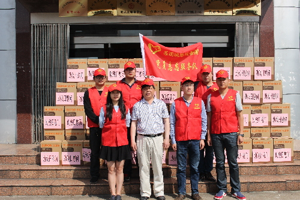

武进系列助残活动
桂电志愿者网 日期：2015-05-25 来源：


2015年5月，武进区第六届青联的委员代表响应武进团区委的倡议，纷纷认领了由武进区特殊教育学校、蓝精灵儿童康复中心的残疾青少年提出的微心愿，开启了“青联携手进圆你微心愿”助残爱心行动大幕。
此次行动共征集到微心愿近150个，内容涵盖了文体用品、小家电、户外活动等多个种类。青联委员在领到微心愿之后，都在第一时间进行联系，与这些残疾学生对接实现微心愿。部分青联委员在完成微心愿对接后，还主动要求再完成其他未认领的微心愿。截止5月18日，已经认领的100多个微心愿中，通过自行对接和送达武进区青联的比例已超过90%。
六届青联委员们用实际行动诠释了武进青年与残疾青少年“心手相牵 共享阳光”，并以此次活动作为武进区第六届青联首个大型公益活动。今后，武进区青联和武进团区委还将进一步扩大公益行动范围，增强公益行动能量，提升公益事业参与度，打响打亮武进青联热心公益的品牌。
遥观镇团委开展“助残日”慰问活动
在全国第25个“助残日”来临之际，5月13日上午，遥观镇团委和民政科联合开展“心手相牵 共享阳光”助残日慰问活动，对全镇部分残疾人家庭进行了走访慰问。
团委及民政科一行每到一处都详细询问了残疾人的治疗、恢复情况，了解生活中的困难，传达社会对残障人员的关心和相关保障措施，并送上了祝福和慰问品，鼓励他们正视现实，树立信心，自立自强，勇敢面对困难，坚强的生活。
镇团委书记倪伟辰表示将以此次活动为契机，下一步深入开展助残志愿服务，努力推动全社会共同关心、支持、参与残疾人事业的良好氛围，为“大爱武进”建设奉献更多的爱心和力量。
“爱心助残 志愿随行”
——武进区公安局团委牵手武进特殊教育学校
2015年5月17日是我国法定的第二十五次全国助残日, 主题是“关注孤独症儿童，走向美好未来”。为落实好国务院等十一个部委统发的《关于开展第二十五次全国助残日活动的通知》文件精神要求，大力弘扬人道主义精神，倡导扶残助残的良好社会风尚，促进家、校、社的和谐发展，激发残疾学生同筑中国梦，热爱社会主义、热爱党、热爱生活的美好情感，武进区公安局巡特警大队团支部与武进去特殊教育学校联合开展了“你我牵手共度全国第二十五个助残日体验活动。”
5月15日上午8:30，武进区特殊教育学校部分师生及武进区公安局巡特警大队青年民警相聚在阶梯教室开展“心手相牵共享阳光”捐赠活动。巡特警大队代表为特校学生捐赠礼物，特校学生赠送学生自画油画。9时，部分师生在巡特警大队警员的陪同下畅游武进低碳湿地公园，特校师生甚是开心。10:30，集体安全返校。
通过这次爱心捐赠活动，大力倡导社会关注特殊群体，关注特教事业，巡特警大队团支部也将继续关爱特校学生，为他们的健康成长保驾护航！
【责任编辑：李想】